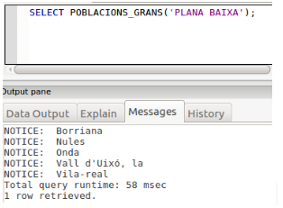
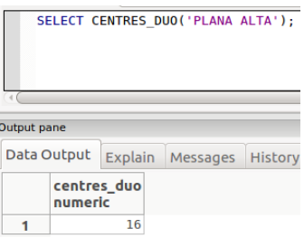
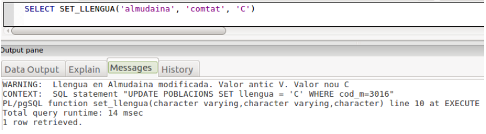
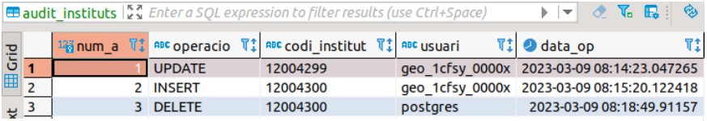

Exercicis de repàs
Cursors
Ejercicio C1: Crea una función que tome el nombre de una comarca como parámetro y muestre una lista de poblaciones en esa comarca junto con sus habitantes.
select lista_poblaciones_por_comarca('Racó');
Población: Ademuz -- habitantes:1179
Población: Casas Altas -- habitantes:149
Población: Casas Bajas -- habitantes:195
Población: Castielfabib -- habitantes:282
Población: Vallanca -- habitantes:156
Población: Torrebaja -- habitantes:429
Población: Puebla de San Miguel -- habitantes:71
Ejercicio C2: Crea una función que muestre el nombre de la comarca y el promedio de altura de todas las poblaciones de la misma comarca, ordenado por comarca. Al final devuelve el número total de comarcas.
Comarca: Alt Vinalopó -- Promedio altura: 580.1428571428571429
Comarca: Baix Maestrat -- Promedio altura: 316.4444444444444444
Comarca: Baix Segura -- Promedio altura: 25.8518518518518519
Comarca: Baix Vinalopó -- Promedio altura: 74.0000000000000000
Comarca: Camp de Morvedre -- Promedio altura: 95.3125000000000000
Comarca: Camp de Túria -- Promedio altura: 198.4000000000000000
Comarca: Canal de Navarrés -- Promedio altura: 261.5000000000000000
Comarca: Comtat -- Promedio altura: 552.4583333333333333
Comarca: Costera -- Promedio altura: 170.6842105263157895
Comarca: Foia de Bunyol -- Promedio altura: 361.8888888888888889
Comarca: Horta Nord -- Promedio altura: 22.0476190476190476
..............................
total comarcas:34
Ejercicio C3: Crea una función que muestre el nombre de la población y la cantidad de institutos asociados, incluso los que tienen 0 institutos, ordenado por institutos.
............................
Población: Xàtiva -- Institutos: 3
Población: Xella -- Institutos: 0
Población: Xeraco -- Institutos: 1
Población: Xeresa -- Institutos: 0
Población: Xert -- Institutos: 0
Población: Xilxes -- Institutos: 0
Población: Xirivella -- Institutos: 2
Población: Xixona -- Institutos: 1
Población: Xodos -- Institutos: 0
Población: Yátova -- Institutos: 0
Población: Yesa, la -- Institutos: 0
Población: Zarra -- Institutos: 0
Población: Zucaina -- Institutos: 0
Ejercicio C4: Crea una función que tome el nombre de una comarca como parámetro y muestre la población y la altura de la población con la altura más alta.
select altura_maxima_por_comarca('Alacantí');
Población: Torre de les Maçanes, la -- altura máxima: 788
Ejercicio C5: Crea una función que muestre el nombre y la altura de las poblaciones que tienen alturas superiores al promedio.
Población: Ademuz -- altura: 660
Población: Agost -- altura: 376
Población: Agres -- altura: 722
Población: Agullent -- altura: 360
Población: Aigües -- altura: 341
Población: Aín -- altura: 498
Población: Albaida -- altura: 315
Población: Albocàsser -- altura: 538
Población: Alborache -- altura: 320
Ejercicio C6: Crea una función que tome dos nombres de provincias como parámetros y devuelva la diferencia absoluta de población entre ambas provincias.
select diferencia_poblacion_entre_provincias('València', 'Alacant');
RETURN: 680.460
Ejercicio C7: Crea una función que muestre el nombre de las poblaciones que no tienen institutos asociados en la tabla instituts, ordenado por población.
Población: Ador
Población: Agres
Población: Agullent
Población: Aielo de Rugat
Población: Aigües
Población: Aín
Población: Albalat dels Sorells
Población: Albalat dels Tarongers
Población: Albocàsser
Población: Alborache
Población: Albuixech
Población: Alcalalí
Ejercicio C8: Crea una función que muestre el nombre de las poblaciones que tienen una población por debajo del promedio.
Promedio= 9234.0295
Población: Ademuz habitantes: 1179
Población: Ador habitantes: 1411
Población: Agost habitantes: 4752
Población: Agres habitantes: 583
Población: Agullent habitantes: 2435
Población: Aielo de Malferit habitantes: 4657
Población: Aielo de Rugat habitantes: 166
Población: Aigües habitantes: 984
Población: Aín habitantes: 129
Población: Albaida habitantes: 6031
Ejercicio C9: Crea una función que dado el nombre de una población y una comarca nos permita establecer la lengua para esa población.
SELECT SET_LLENGUA('Almudaina','Comtat','V');
RETURN: void
Ejercicio C10: Crea una función llamada Densidad_centros que dado el nombre de una comarca nos devuelva la cantidad de centros que tiene por unidad de superficie.
SELECT DENSIDAD_CENTRES('Plana Alta');
RETURN: 0.0219
Ejercicio C11: La misma función del ejercicio anterior pero utilizando cursor explícito.
Ejercicio C12: Crea una función, utilizando al menos un cursor explícito, llamada ALTURA_MITJA, que nos permita obtener la altura media a la que están los centros en función de la comarca y de la lengua de la población (estos serán los parámetros de entrada).
SELECT ALTURA_MITJA ('Comtat'.'v');
RETURN: 455
Ejercicio C13: Crea una función, utilizando cursores, llamada POBLACIONS_GRANS que dado el nombre de una comarca nos devuelva los nombres de las poblaciones de la comarca que tienen una población superior en un 50% a la media de población de la provincia.

Ejercicio C14: Crea una función, utilizando cursores, llamada CENTRES_DUO , que dado el nombre de una comarca nos devuelva la cantidad total de centros de las dos poblaciones con mayor número de habitantes.

Ejercicio C15: Crea una función llamada INTRODUCIR_INSTITUTO(varchar,varchar,varchar,varchar,numeric,numeric), que acepte los parámetros indicados, uno por cada campo de la tabla INSTITUTS, que compruebe:
- Que el primer parámetro, el código del instituto, tenga exactamente 8 caracteres y que comience por 03, 12 o 46 (los códigos de provincia)
- Que el código postal esté entre 3001 y 3999, 12001 y 12999 o 46001 y 46999. Observa que el cod_m no hará falta comprobarlo, ya que es clave externa y saltaría el error si no es un código de municipio existente.
select introduir_intitut('46000000','Institut de prova','Castello','s/n',3001,12028); select introduir_intitut('03000000','Institut de prova','Castello','s/n',3001,12028);
Triggers
Ejercicio T1: Crear un trigger que, después de una inserción, actualice automáticamente la cantidad total de habitantes en la tabla provincies cada vez que se inserta una nueva población en la tabla poblacions.
Ejercicio T2: Crear un trigger que evite la actualización del nombre de una población en la tabla poblacions3 si existe la comarca.
Ejercicio T3: Crear un trigger que evite la inserción de un nuevo instituto en la tabla instituts si el código de la población asociada no existe en la tabla poblacions.
Ejercicio T4: Crear un trigger, MOD_LLEN, que nos avise cuando una población cambia de lengua mayoritaria.

Ejercicio T5: Crea un trigger para llevar una auditoría de la tabla INSTITUTS para controlar todas las modificaciones que se hacen en la tabla. Para eso, por cada actualización hecha introduciremos una fila en la tabla AUDIT_INSTITUT (crearla previamente si no existe) con la siguiente información:
-
num_a: es la clave principal de la tabla, que será un autonumérico (SERIAL)
-
operacio: contendrá el tipo de operación de actualización realizada en la tabla INSTITUS, que podrá ser: INSERT, DELETE o UPDATE
-
codi_institut: código del instituto afectado por la operación de actualización.
-
usuari: usuario que ha realizado la operación de actualización, se puede obtener con current_user; podríamos pensar que siempre será el mismo usuario que hace la operación, pero en realidad lo puede hacer todo usuario que tenga permiso de acceso a la Base de Datos. En la imagen se puede observar cómo el usuario postgres también ha hecho una operación de actualización.d’actualització
-
data_op: fecha-hora (timestamp) de la actualtzación; se puede obtener con la función now()

En la imagen se observa cómo se han hecho 3 actualizaciones desde el momento de creación del trigger, la última de ellas realizada por el usuario postgres
Ejercicio T6: Crear un trigger que registre automáticamente en una tabla de auditoría, cada vez que se actualiza la población en la tabla poblacions, pero sólo si la población aumenta en más del 10%. En la tabla se guardará el valor de la población antes de ser actualizado. Crear la tabla audit_poblacions previamente, si no existe, con la siguiente información: cod_m: códido de población fecha: fecha modificación poblacion_anterior: población antes de la actualización.
Llicenciat sota la Llicència Creative Commons Reconeixement NoComercial CompartirIgual 3.0